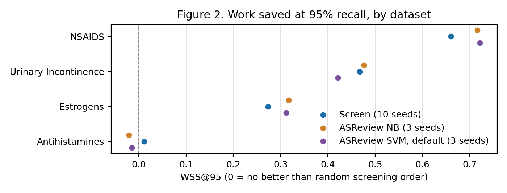
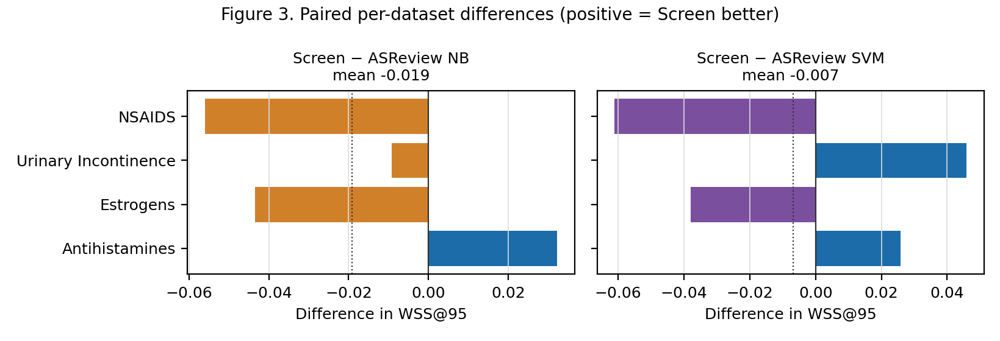
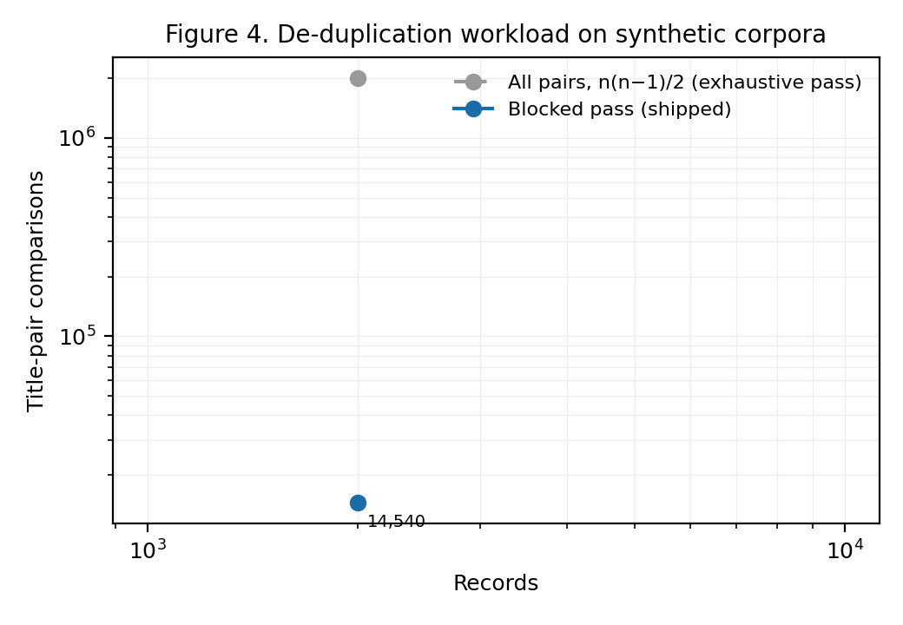
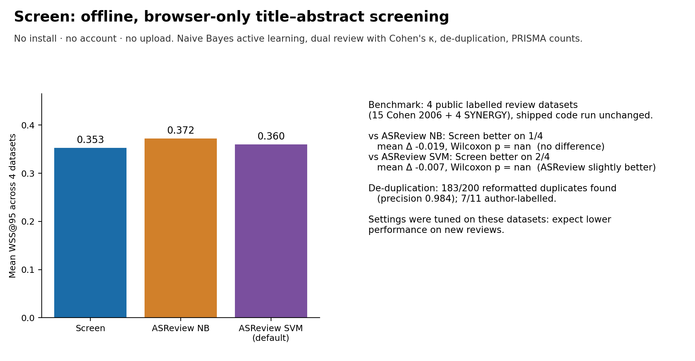

All runs · Repository · Paper archive (Zenodo) · Live app
Screen: reproducible benchmark: latest verified quick run
Run 37229025387 on commit 3879cd6, published 2026-10-04 19:40 UTC. Quick run (4 small datasets, 1 seed), run on every push.
| Platform | Result |
|---|---|
| Docker (canonical) | 23/23 numbers reproduced |
| Linux | 23/23 numbers reproduced |
| Windows | 23/23 numbers reproduced |
| macOS | 23/23 numbers reproduced |
Every checked number (canonical run: quick-docker)
| Quantity | Expected | Reproduced | Result |
|---|---|---|---|
| screen_wss95[cohen_antihistamines] | 0.0113 | 0.01129 | PASS |
| asreview_nb_wss95[cohen_antihistamines] | -0.021 | -0.020968 | PASS |
| asreview_svm_wss95[cohen_antihistamines] | -0.0145 | -0.014516 | PASS |
| screen_wss95[cohen_estrogens] | 0.2734 | 0.27337 | PASS |
| asreview_nb_wss95[cohen_estrogens] | 0.3168 | 0.316848 | PASS |
| asreview_svm_wss95[cohen_estrogens] | 0.3114 | 0.311413 | PASS |
| screen_wss95[cohen_nsaids] | 0.6599 | 0.659924 | PASS |
| asreview_nb_wss95[cohen_nsaids] | 0.7159 | 0.715903 | PASS |
| asreview_svm_wss95[cohen_nsaids] | 0.721 | 0.720992 | PASS |
| screen_wss95[cohen_urinaryincontinence] | 0.4668 | 0.46682 | PASS |
| asreview_nb_wss95[cohen_urinaryincontinence] | 0.476 | 0.475994 | PASS |
| asreview_svm_wss95[cohen_urinaryincontinence] | 0.4209 | 0.420948 | PASS |
| dedup_nagtegaal_detected | 7 | 7 | PASS |
| dedup_nagtegaal_gold_duplicates | 11 | 11 | PASS |
| dedup_nagtegaal_flagged_not_in_gold | 10 | 10 | PASS |
| dedup_reformatted_detected | 183 | 183 | PASS |
| dedup_reformatted_false_positives | 3 | 3 | PASS |
| dedup_reformatted_total_flagged | 186 | 186 | PASS |
| dedup_blocked_vs_brute_blocked | 12 | 12 | PASS |
| dedup_blocked_vs_brute_brute | 12 | 12 | PASS |
| dedup_blocked_vs_brute_brute_only | 0 | 0 | PASS |
| dedup_blocked_comparisons[n=2000] | 14540 | 14540 | PASS |
| dedup_reformatted_precision | 0.984 | 0.9839 | PASS |
Also as reproduction_report.md and stats.json; every run's full outputs are artefacts of the run.
Figures from this run



